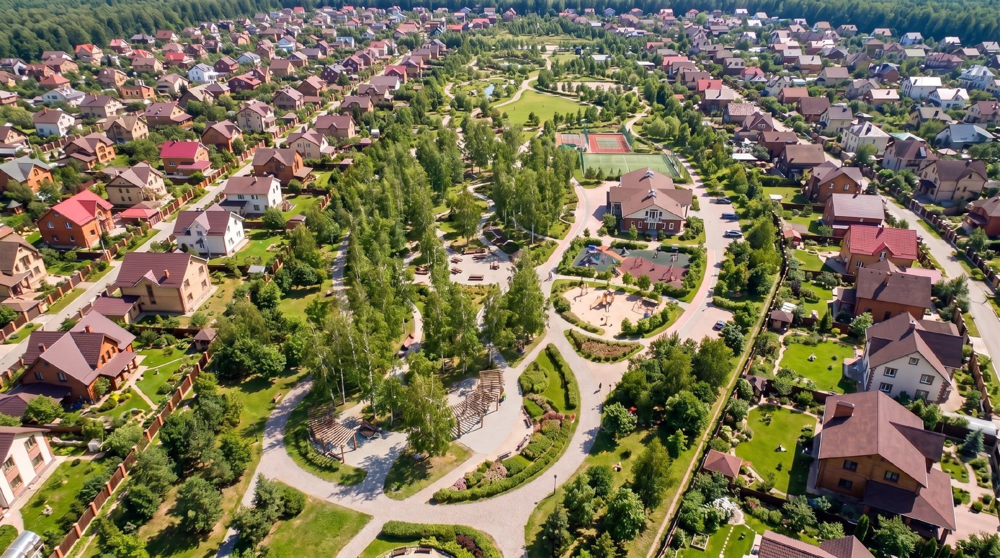
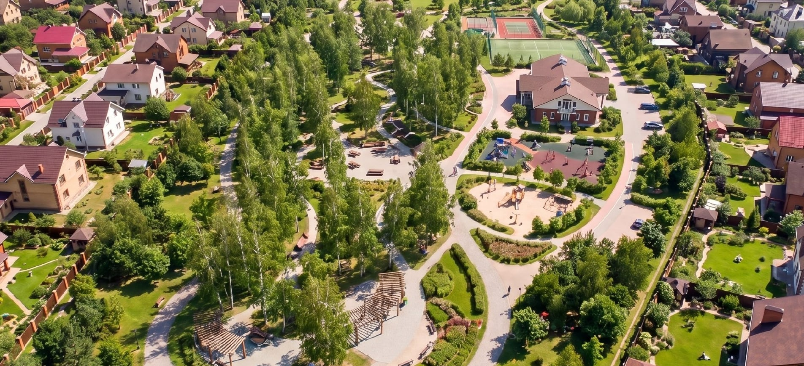
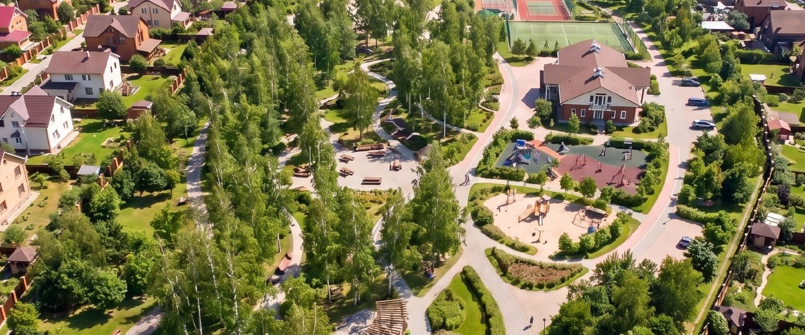
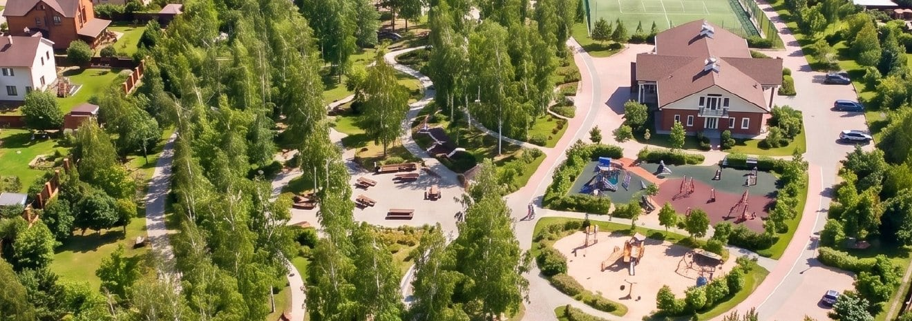
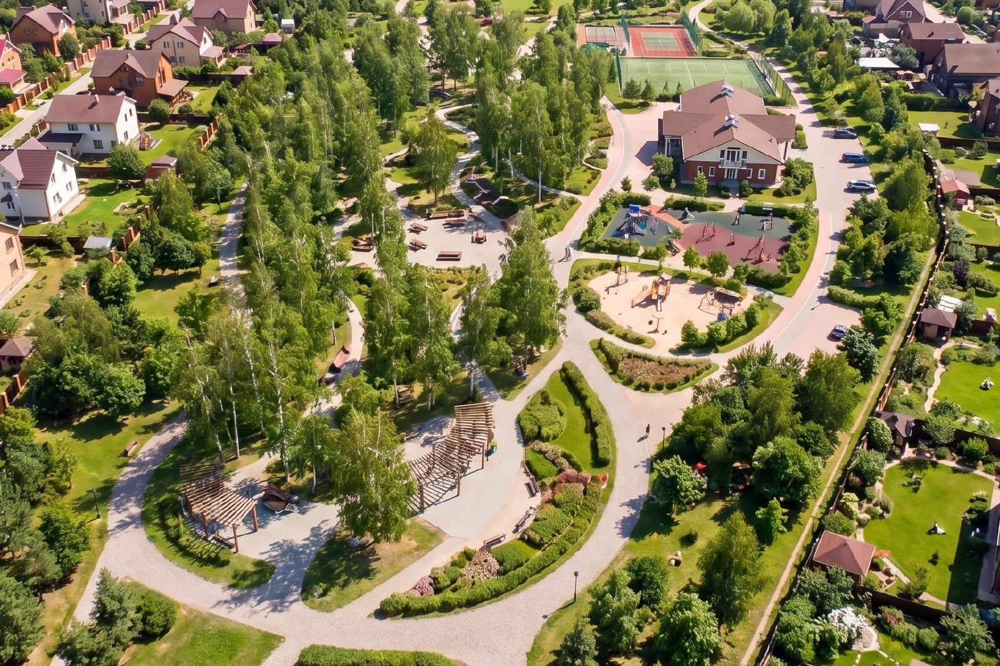
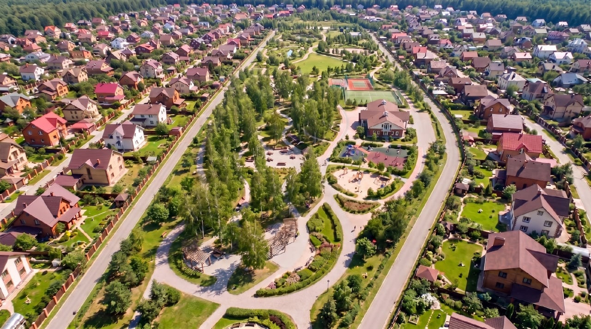

Один и тот же снимок в разной обрезке и в блоках разной высоты. Выбирать приходится между двумя вещами: чем теснее режем по парку, тем сильнее кадр растягивается на вашем экране и тем мягче картинка. В исходнике 2560 пикселей по ширине, а экран просит около 1905 — запас всего на 25 процентов обрезки. Под каждым вариантом написано, есть растяжение или нет.
Текст главы для контекста: «Парк начинается за оградой участка: тропы для прогулок и пробежек, поляны, детские и спортивные площадки».






Скажите номер — поставлю на страницу. Если нужен именно ИУ, но без мыла, пришлите его в исходном размере: тот, что лежит сейчас, 1280 пикселей по ширине, это сжатая копия из мессенджера.